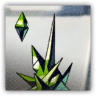

结晶重构体 Crystalline Reconstructure
近战 法术；普通 构装 魔宠
|
 |
由未知材料构成的神秘结晶体。似乎会与其主人建立独特的生命链接，构成其核心的材质对于源石技艺的传导率极高，在战斗中可以为帮助施法者传递法术。 |
结晶重构体丨Crystalline Reconstructure
微型构装（法术造物），守序中立
| AC 13 | 先攻 +3（13） |
| HP 16（4d4+6） | |
| 速度 0尺，飞行30尺 | |
| 调整 | 豁免 | 调整 | 豁免 | 调整 | 豁免 | |||||||||
|---|---|---|---|---|---|---|---|---|---|---|---|---|---|---|
| 力量 | 6 | -2 | -2 | 敏捷 | 16 | +3 | +3 | 体质 | 12 | +1 | +1 | |||
| 智力 | 8 | -1 | -1 | 感知 | 12 | +1 | +1 | 魅力 | 14 | +2 | +2 |
| 技能 医药+3，洞悉+3，隐匿+5 |
| 抗性 光耀，黯蚀 |
| 免疫 毒素；力竭，中毒 |
| 感官 盲视60尺，被动察觉11 |
| 语言 理解通用语但不会说 |
| CR 0（XP10；PB+2） |
特质 Traits
魔法抗性 Magic Resistence。结晶重构体为抵抗法术和魔法而作的豁免具有优势。
生命链接 Vital Link。结晶重构体可以被具有链愈师等级的生物选取作为法术寻获魔宠的目标，且其会保持其生物类型为构装。重构体的生命和其主人被链接起来。当重构体不在主人30尺内时，其在每次回合结束时流失5点生命值。
动作 Actions
部署模式 Deploy Mode。结晶重构体的体型变大至中型，飞行速度降低至0，并为自己添加20点临时生命值，直到其再以此动作变回原来的形态。
反应 Reactions
术法超导 Art Superconductive（仅部署期间）。触发：结晶重构体120尺内的可见盟友施展法术。响应：重构体与其就该法术共享视线，并将施展法术的起点变为自身。